LL Buchanan Lake
Floating Islands
Betty's Island - 6, a floating island....
The ongoing story of a floating island.
Back on Betty's Island page 5, we left the island in December 2010, in the snow.
This page starts at the top with the most recent report in 2011, and will pick up the next report when it happens.
2011, Spring....
The trees are doing very good, with plenty of water and goose poop fertilizer. Most of the grass is green, including the clump of dead dry grass that was therefore spray painted green, by the paint guy. Well, green is good. The island guys (two of them this year) replaced one tree that was nibbled a bit by geese and muskrats. Better wire fencing was added for protection of several trees. A Canadian goose nested on the island, as usual.
The island was re-anchored with a better anchor system of rope, replacing the cable. The island now moves faster and farther in the wind. Betty's and Pebbles Islands were switched, so Betty's Island is in the middle of the lake, and Pebbles Island is at the north end. And a bottle of fine wine was enjoyed, on the island, by the island committee.
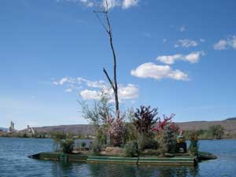
The current condition.
A gaggle of goslings came from the goose nest again.
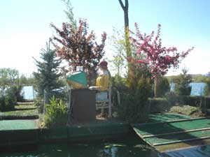
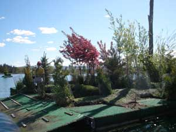
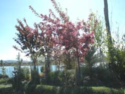
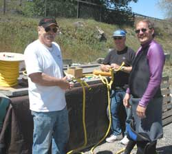
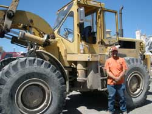
The entire island re-achoring crew, including the boat captain whose boat we did not scratch the entire time.
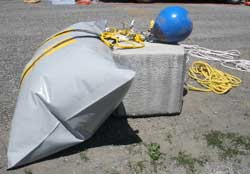
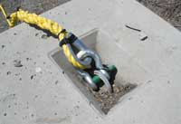
The float bag, A-2 polyform float, yellow up line, white top line, thimble and shackle.
And the 2,040 pound concrete half environmental block.
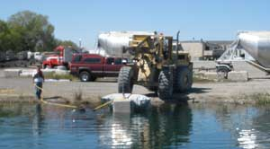
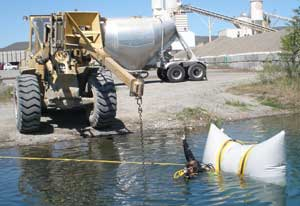
The concrete block is under the float bag.
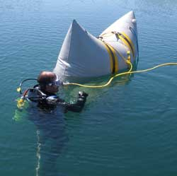
In position, there on the left. Towing into positition, bottom center. The moment the block is cut loose, right.
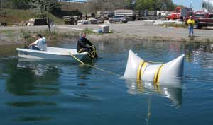
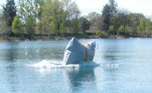
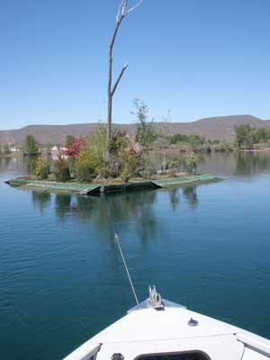
Towing Betty's island to the new anchor, backwards of course.
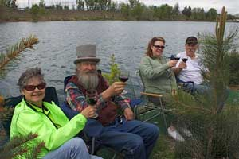
And the purpose of the island.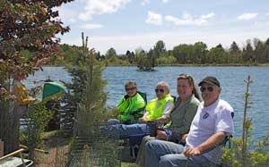
Betty's Island-1
Betty's Island-2
Betty's Island-3
Betty's Island-4
Betty's Island-5
Barney's Island
Pebbles Island
Aerial Photos
Neighbors
History
Swans
Birds
Trees
Trees-2
Trees-3
Lake
Links